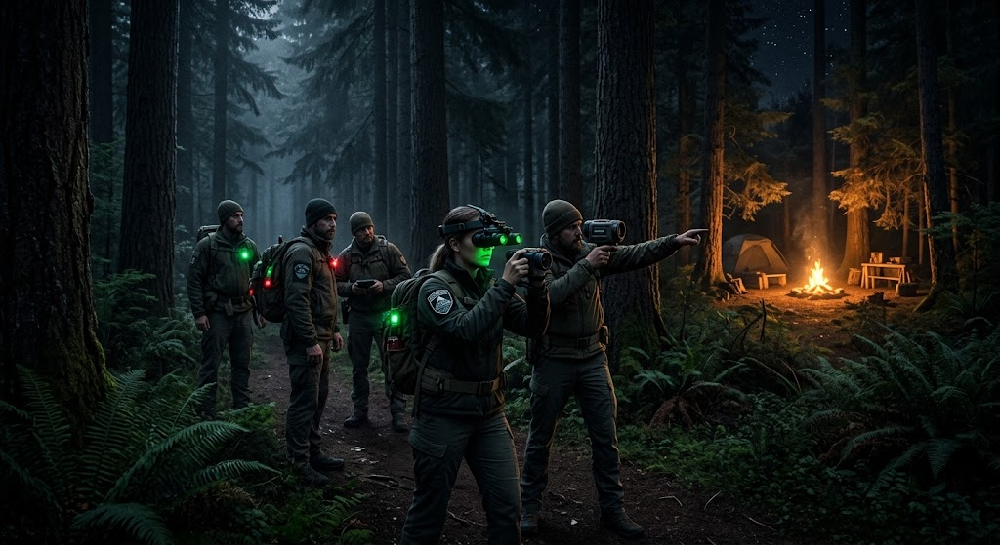

Weekend Excursions & Research Expeditions
Enhance your stay at The Sleepy Sasquatch Outpost with our exclusive weekend field research events, evening lectures, and night-sky observation sessions. All activities are guided by experienced field researchers and local forest trackers.

Scheduled Weekend Activities
- Midnight Thermal Audio Hunts: Join our nocturnal tracking team as we use directional microphones and thermal imaging equipment along high-activity ridge lines.
- Campfire Story Circle & Sighting Reports: Gather around the outdoor fire pit each Friday evening at 8:00 PM to swap cryptid sighting stories and discuss local folklore.
- Mothman Sky-Observation Workshop: Head up to the outpost observation deck on Saturday nights for a guided stargazing and anomaly tracking session using infrared binoculars.
- Chupacabra Trail Excursions: Morning guided hikes through surrounding forrests focusing on identifying native wildlife tracks and wilderness navigation.
Expedition Guidelines
- Equipment Provided
- Infrared flashlights, field observation logbooks, and plaster footprint casting kits are included with all guided registrations.
- Recommended Attire
- Sturdy waterproof hiking boots, warm layered clothing, and dark non-reflective outerwear are highly recommended for all night events.
- Registration Information
- Space is limited to 12 participants per event to minimize noise and environmental disturbance. Reserve your spot at the front desk upon check-in.
Weekend Event Schedule & Rates
| Day & Time | Expedition / Event | Meeting Point | Guest Fee |
|---|---|---|---|
| Friday, 8:00 PM | Campfire Story Circle & Cast Review | Main Fire Pit | Complimentary |
| Saturday, 8:30 AM | Chupacabra Trail Excursion | North Trailhead | $15.00 |
| Saturday, 10:00 PM | Mothman Sky-Observation Workshop | Squatch-Watch Deck | $25.00 |
| Sunday, 12:00 AM | Midnight Thermal Audio Hunt | Base Camp Lobby | $35.00 |